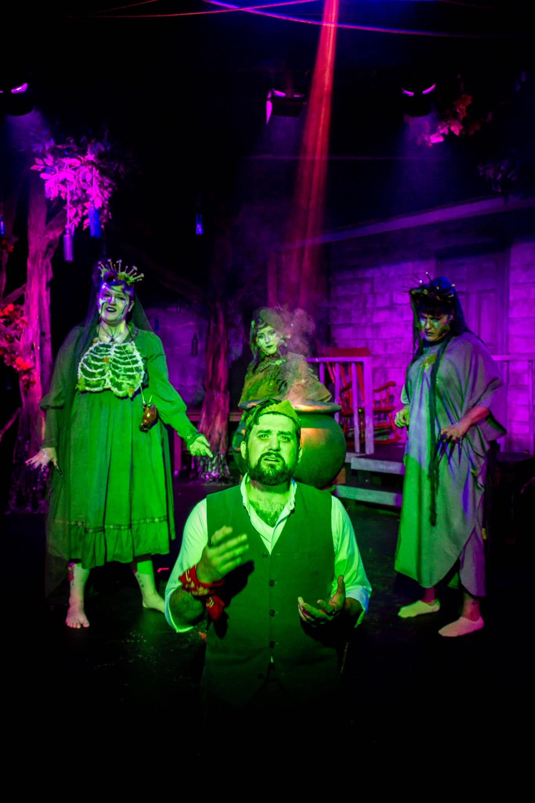
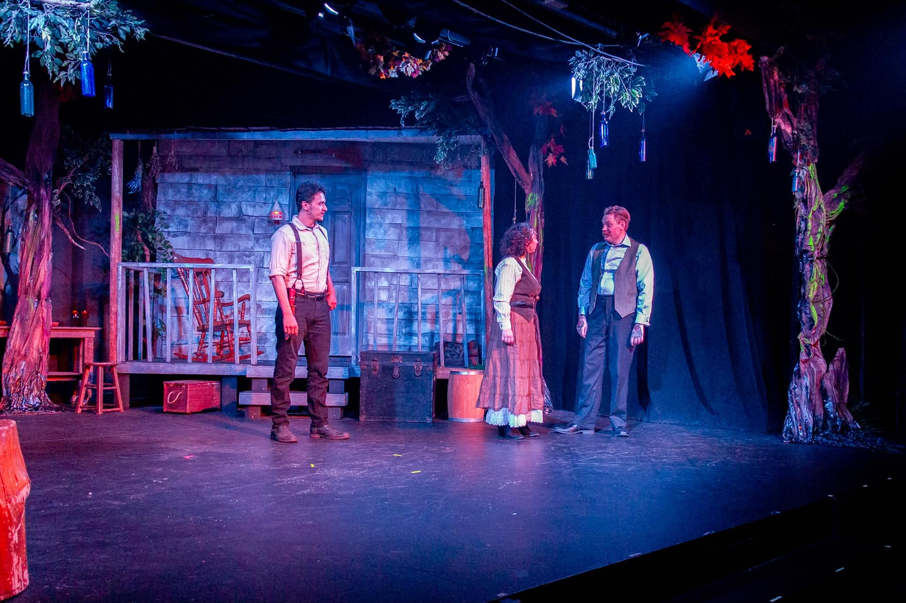

📷 Image courtesy of Amber Wilkes 📷
Macbeth, Through the Eyes of a Shakespeare Newcomer
The extent of my Shakespeare knowledge up until this past weekend consisted solely of film adaptations released in the '90s and early 2000s, namely movies like Romeo + Juliet, O, and A Midsummer Night's Dream. Fun fact: Upon doing a little research for this article, I learned that The Lion King is actually loosely based on Hamlet. Who knew?! Not me, clearly.
Considering these are all movies and they were all released before the advent of the iPhone, it’s safe to say that I am not well-versed in Shakespearean theater. Perhaps I get some credit for being able to quote numerous lines from 10 Things I Hate About You, though I’m pretty sure “I have a dick on my face, don't I?” isn’t taken directly from one of Ol’ Willy’s plays or sonnets.
Figuring it would be a great opportunity to broaden our theater horizons, so to speak, my family and I decided to take in The Village Players Theatre's production of Macbeth. This also marked our first experience seeing a play instead of a musical at The Village, so it was sort of a “two birds with one stone” type of situation. Not exactly a crucial piece of information for you, the reader, but "the more you know" or whatever.
Upon arrival, we learned that it was a nearly sold-out performance, which came as no surprise, as they always put on a great show. As we took our seats ahead of showtime, I had a chance to appreciate the excellent job that was done with the set. The focal point of the stage was a rustic cabin facade set in a wooded area, with an array of glass bottles strung from tree limbs. As I was taking that in, up walks VPT alumnus Seth Johnson. Come to find out, he was seated right next to my daughter, who just so happens to be one of his voice students. Small world! (Hey, I found it interesting. Leave me alone.)
Minutes later, the director of the play, Zachary Tuttle-Robb, took the stage for the pre-show announcements. It was at this time that I learned this was his directorial debut, which I thought was really cool, as I've seen him perform onstage multiple times and have always appreciated his performances immensely (my personal favorite being his role as Peter Spankoffski in Nerdy Prudes Must Die). Per a letter from the director in the playbill, I also found out that he drew inspiration from a podcast called Old Gods of Appalachia and came up with the idea of having the Macbeth storyline take place in the Appalachian Mountains, as the mountain range was once connected to Scotland (hence the set I mentioned earlier). Pretty rad take, if you ask me. He pitched the idea, which was met with support and excitement from fellow board members. It was then that he realized, despite never having aspirations to direct, it was only right that he oversee this project himself. I’m happy to report that, in my opinion, he did a fantastic job with the production.

📷 Image courtesy of Amber Wilkes 📷
Now, typically, when seeing plays and musicals I'm not familiar with (which is damn near all of them, as I'm a live theater noob), I like going in blind. I’m extremely anti-spoiler, to a fault, really. However, knowing that I was likely going to be a bit lost with the Shakespearean-era lingo, I decided to read a brief, high-level synopsis before attending this particular show. And boy, was I glad that I did. As a matter of fact, I wish I had done a deeper dive ahead of time. Through absolutely no fault of the cast or production, I was immensely lost during the majority of the show's dialogue. I severely overestimated my ability to comprehend the language used in Shakespeare's work. I later jokingly compared it to the Simlish language from my wife's favorite video game, The Sims.
I want to take a moment and stress that this is in no way a criticism of the show; this was very much a "me issue." I'm sure there are many people who have a stronger grasp of literature and the language used during that time who would have no trouble keeping up with the storyline.
Despite my repeated struggles to comprehend the dialogue, thanks to the cast's excellent onstage performances, I was able to piece together most of what was happening most of the time. Speaking of which, I was particularly struck by the actors portraying Macbeth and Lady Macbeth, Jake Spencer and Rachel Hetrick, respectively. It feels sort of obvious to single out two of the primary characters, but they truly did an amazing job of bringing those characters to life. (Side note: As someone who has never acted, I was impressed by the sheer amount of dialogue that Mr. Spencer was required to memorize, especially seeing as how the dialogue is incredibly complex by modern-day standards.) I was also thoroughly impressed with Nicole Tuttle-Robb's portrayal of Banquo. She performed some fairly intricate knife and swordplay scenes that clearly took a healthy amount of practice to pull off convincingly. And despite their limited stage time, I particularly enjoyed the three actresses who portrayed the witches: Christina D'Amato, Carlyn Campbell-Johannes, and Sydney Breeding. A combination of their physical acting, wardrobe, and makeup made for memorable presences onstage. As per usual, the entire cast was impressive and worthy of praise. There were some faces I hadn’t seen perform previously, and each and every one of them did not disappoint. The unsung heroes of this show (and frankly, every production) were the folks behind the scenes operating the lights and sound. They did an amazing job making the show much more immersive with lighting effects and fitting soundscapes that were fixtures throughout the entire story. In other words, from top to bottom, it was quite impressive, to say the least.
If you haven’t caught a performance of this show yet, I highly recommend you do so. The final shows are November 5–8, and you can purchase tickets on The Village Players Theatre website.